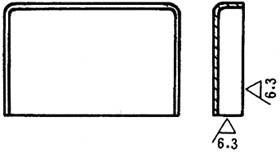
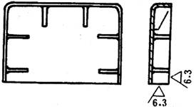
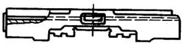
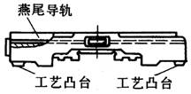
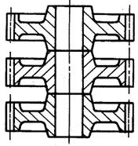
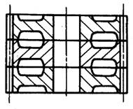

注 意 事 项 |
图 例 |
说 明 |
|
改 进 前 |
改 进 后 |
||
增设必要的加强肋 |
 |
 |
较大面积的薄壁零件，刚性不好，应增设必要的加强肋 |
设置支承用工艺凸台 |
 |
 |
铣床工作台底座支承面积小，加工小平面及燕尾导轨时，振动大，增设工艺凸台后，提高了刚性，并使装夹容易 |
零件形状适应加工方法 |
 |
 |
在可能情况下，改为右图，可提高加工时的刚性 |